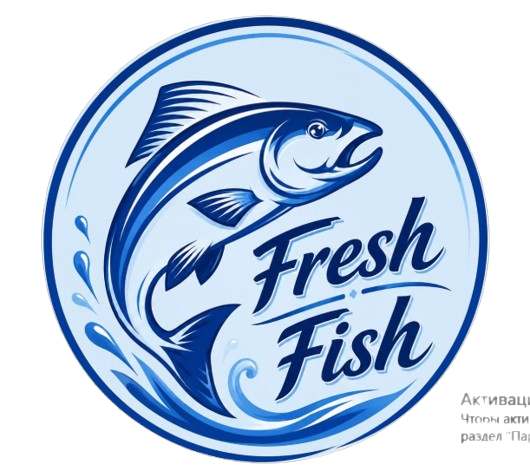

Клиентское резюме проекта
QR-меню Fresh Fish
Мобильный сайт-меню для рыбного ресторана в Караганде: быстрый выбор блюд, понятные цены, фото, контакты и переходы в WhatsApp, TikTok и 2ГИС.
Mobile-first
Русский + қазақша
Фото блюд
Готово к Cloudflare
Главная идея сайта
Сайт заменяет бумажное меню и открывается по QR-коду прямо на телефоне гостя. Визуально он сделан в морской стилистике Fresh Fish: фирменный логотип, синие оттенки, карточки блюд и быстрые кнопки связи.
Гость видит меню без лишних переходов: выбирает раздел, смотрит фото, цену, вес/количество и сразу может написать или позвонить ресторану.
Что уже реализовано
- Адаптивная версия под смартфоны.
- Разделы меню: горячие блюда, крылышки, салаты, комбо, сеты, гарниры, отзывы и контакты.
- Карточки блюд с ценами, весом и названиями на русском и казахском.
- Экспериментальные фото блюд из текущего набора.
- Кнопки WhatsApp, звонка, TikTok и 2ГИС.
- Подготовка к публикации на Cloudflare.
8
разделов сайта
33
карточки меню
2
языка в меню
Основные преимущества для ресторана
- Удобнее гостю: меню открывается быстро и понятно на телефоне.
- Меньше ручной работы: цены, фото и позиции можно обновлять централизованно.
- Больше заявок: WhatsApp и звонок доступны с любой части сайта через быстрые кнопки.
- Сильнее доверие: блок видеоотзывов ведёт гостей в TikTok ресторана.
- Готовность к запуску: структура проекта настроена под деплой, чтобы не было ошибки с отсутствием папки статических файлов.
Разделы меню
🔥 Горячие блюда
🍗 Крылышки
🥗 Салаты
🎁 Комбо
🦞 Сеты
🍟 Гарниры
⭐ Отзывы
📍 Контакты
Сейчас фотографии используются как тестовые. После согласования можно заменить их на финальные ресторанные фото без переделки структуры сайта.
Готовый текст для отправки клиенту
Сообщение-презентация
Можно отправить как есть или использовать как основу для устной презентации.
Здравствуйте! Подготовили первую версию QR-меню для Fresh Fish.
Это удобный мобильный сайт, который гость открывает по QR-коду за столом или по ссылке. Внутри меню уже собраны основные разделы: горячие блюда, крылышки, салаты, комбо, сеты, гарниры, отзывы и контакты.
Каждая позиция оформлена в виде аккуратной карточки: есть название на русском и казахском, цена, вес или количество, а также фотография блюда. Навигация сделана простой — гость может быстро перейти к нужному разделу и не листать всё меню вручную.
Также добавлены быстрые действия: написать в WhatsApp, позвонить, перейти в TikTok с отзывами и открыть Fresh Fish в 2ГИС. Эти кнопки помогают гостю сразу связаться с рестораном или посмотреть социальные доказательства.
Дизайн выполнен в фирменной морской стилистике: логотип Fresh Fish, синие оттенки, чистые карточки, визуальный акцент на свежей рыбе и сетах. Сайт адаптирован под телефон, так как именно так чаще всего открывают QR-меню.
Текущие фотографии — экспериментальные, чтобы посмотреть, как они смотрятся в интерфейсе. После согласования можно заменить их на финальные фото, а также быстро поправить цены, составы, режим работы и контакты.
Технически проект подготовлен к публикации: сайт собран как статическое меню и настроен для деплоя на Cloudflare, чтобы при публикации не возникала ошибка с отсутствием папки статических файлов.
Что лучше проверить перед финальным запуском
Цены и граммовки
Проверить актуальность всех цен, весов и количества порций.
Перевод
Сверить казахские названия блюд и составов с финальной версией меню.
Фото
Утвердить, какие тестовые фото оставить, а какие заменить на финальные.
Контакты
Проверить номера телефона, WhatsApp, TikTok, 2ГИС и режим работы.
Отзывы
При желании заменить тестовые тексты отзывов на реальные видео/цитаты гостей.
QR-код
После публикации привязать финальную ссылку к QR-коду для столов, Instagram и печатных материалов.
Итог: сайт уже можно показывать клиенту как рабочий прототип QR-меню. Следующий этап — согласование контента и финальных фото.